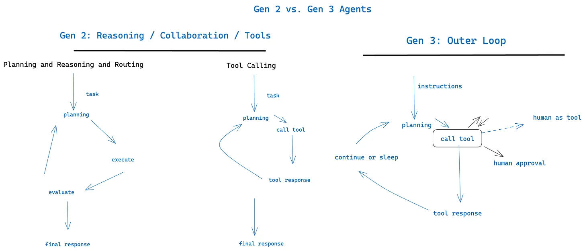

7. 用工具呼叫聯絡真人（Contact humans with tool calls）
預設情況下，LLM API 依賴一個根本且高風險的 token 選擇：我們要回傳純文字內容，還是回傳結構化資料？

你把很大的重量壓在「第一個 token」這個選擇上。the weather in tokyo 這種情況，它是
"the"
但 fetch_weather 這種情況，它是某個代表 JSON 物件開頭的特殊 token。
|JSON>
讓 LLM 永遠輸出 JSON，再用 request_human_input 或 done_for_now 這類自然語言 token 宣告意圖（而不是用 check_weather_in_city 那種「正規」工具），可能得到更好的結果。
同樣地，這也許不會帶來任何效能提升，但你應該做實驗，並確保自己能自由嘗試各種奇怪的做法，以取得最好的結果。
class Options:
urgency: Literal["low", "medium", "high"]
format: Literal["free_text", "yes_no", "multiple_choice"]
choices: List[str]
# Tool definition for human interaction
class RequestHumanInput:
intent: "request_human_input"
question: str
context: str
options: Options
# Example usage in the agent loop
if nextStep.intent == 'request_human_input':
thread.events.append({
type: 'human_input_requested',
data: nextStep
})
thread_id = await save_state(thread)
await notify_human(nextStep, thread_id)
return # Break loop and wait for response to come back with thread ID
else:
# ... other cases之後，你可能會收到 webhook，來自某個處理 slack、email、sms 或其他事件的系統。
@app.post('/webhook')
def webhook(req: Request):
thread_id = req.body.threadId
thread = await load_state(thread_id)
thread.events.push({
type: 'response_from_human',
data: req.body
})
# ... simplified for brevity, you likely don't want to block the web worker here
next_step = await determine_next_step(thread_to_prompt(thread))
thread.events.append(next_step)
result = await handle_next_step(thread, next_step)
# todo - loop or break or whatever you want
return {"status": "ok"}上面這段包含了要素 5：統合執行狀態與業務狀態、要素 8：自己掌握控制流、要素 3：自己掌握脈絡視窗、要素 4：工具就只是結構化輸出等好幾個模式。
如果我們採用要素 3：自己掌握脈絡視窗裡的 XML 風格格式，跑過幾輪之後的脈絡視窗（context window）會像這樣：
(snipped for brevity)
<slack_message>
From: @alex
Channel: #deployments
Text: Can you deploy backend v1.2.3 to production?
Thread: []
</slack_message>
<request_human_input>
intent: "request_human_input"
question: "Would you like to proceed with deploying v1.2.3 to production?"
context: "This is a production deployment that will affect live users."
options: {
urgency: "high"
format: "yes_no"
}
</request_human_input>
<human_response>
response: "yes please proceed"
approved: true
timestamp: "2024-03-15T10:30:00Z"
user: "alex@company.com"
</human_response>
<deploy_backend>
intent: "deploy_backend"
tag: "v1.2.3"
environment: "production"
</deploy_backend>
<deploy_backend_result>
status: "success"
message: "Deployment v1.2.3 to production completed successfully."
timestamp: "2024-03-15T10:30:00Z"
</deploy_backend_result>好處：
- 指令明確：針對不同類型的真人互動提供工具，讓 LLM 能更精確表達
- 內迴圈與外迴圈（Inner vs Outer Loop）：讓代理工作流能走出傳統 ChatGPT 式介面。在那裡，控制流與脈絡初始化的方向可能是
Agent->Human而不是Human->Agent（想想由 cron 或事件啟動的代理） - 多方人為存取：透過結構化事件，能輕鬆追蹤與協調不同人的輸入
- 多代理：這個簡單的抽象能輕易擴充，支援
Agent->Agent的請求和回應 - 持久：搭配要素 6：用簡單的 API 啟動、暫停、恢復，就能讓多方工作流持久、可靠、可內省

和要素 11：從任何地方觸發，在使用者所在之處與他碰面搭配得很好。